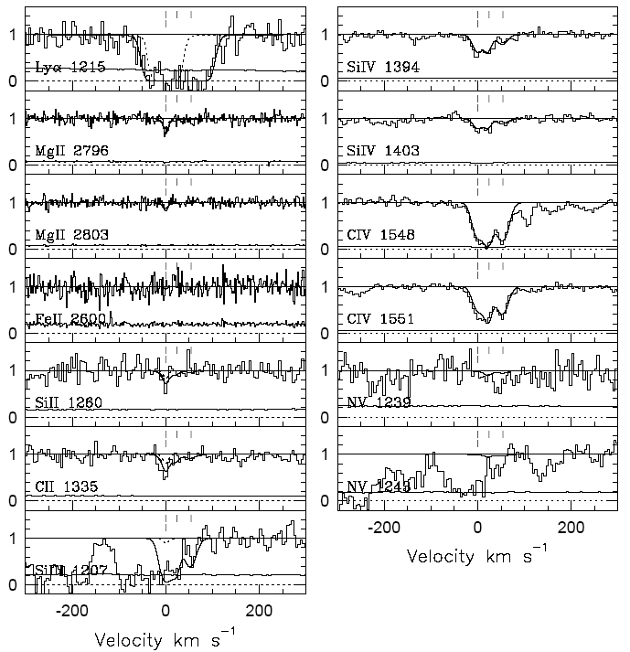

| |
Modelling quasar absorption line
spectra
The CASt dataset
QSO_absorb.txt
Astronomical background
Quasars, the most luminous continuously emitting objects in
the Universe, arise from the accretion (infall) of gas onto
supermassive black holes in the center of galaxies. Quasars were
much more active when the Universe was young so (due to the expansion
of the Universe) most appear at high redshifts. In addition to
studies of black hole phenomenology, quasar spectra are uniquely useful
for studies of intergalactic matter that happen to lie between a quasar
and the observer on Earth. Quasars show several types of
absorption lines reflecting different structures in intergalactic
space. These include the "Lyman-alpha forest" from small clouds
that do not appear to lie in galaxies, "damped Lyman-alpha" lines from
dense clouds likely present in the disks of intervening galaxies, and
"strong and weak Mg II absorption" systems likely arising in the halos
of intervening
galaxies.
Weak Mg II absorption systems give an opportunity to study
the evolution of metals (which astronomers view as all elements heavier
than helium and the interstellar media of galaxies over a wide span of
ages. Often, several intervening absorbers are seen at widely
separated redshifts, and for each absorber one or several clouds
separated by small Doppler shifts can be seen. Absorption from
different line of different elements permit detailed study of the
elemental abundances and ionization phases of the absorbing gas.
Dataset
We give here two small portions of the spectrum of a bright
quasar described in the following study:
HIGH-RESOLUTION
STIS/HUBBLE SPACE TELESCOPE AND HIRES/KECK SPECTRA OF THREE WEAK Mg ii
ABSORBERS TOWARD PG 1634+7061
Jane C. Charlton, Jie Ding, Stephanie G. Zonak, Christopher W.
Churchill, Nicholas A. Bond, and Jane R. Rigby
We give regions around the 3-times-ionized silicon line Si IV
1394 and the 3-times-ionized carbon line C IV 1551 for the z=0.653411
absorption system, which are two of the right-hand panels shown
below. The datasets have two columns: velocity in kilometers per
second with respect to the absorber rest frame; and normalized
intensity of the quasar light. Accompanying each spectrum is a
best-fit model constructed with a complex astrophysical model of the
underlying quasar spectrum, cloud velocities and ionizations, fitted to
all of the lines shown below simultaneously. This fit is made using the
CLOUDY code developed by G. Ferland. The model and data are not
provided at exactly the same velocities, so interpolation may be
needed.
Statistically, it can be viewed as a least-squares fit of a
normal mixture model to each spectrum, with constraints provided by the
other line spectra. The plotted model has three clouds centered
at (0,24,54) km/s with widths of (13,9,14) km/s.

Statistical exercises
- Perform a normal mixture model for the two spectra,
independently and jointly, and recover the published results.
Establish the confidence that 3 (and not 2 or 4) clouds are present,
and confidence intervals for the cloud central velocities, widths, and
amplitudes.
- Measure the noise level in spectral regions away from the
absorption system and evaluate its impact on the results above.
Note that the noise may not be Gaussian due to the presence of other,
unidentified absorption lines.
Thanks
to Anand Narayanan and Jane Charlton (Penn State) for providing this
dataset
|